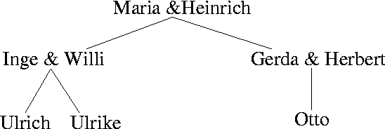
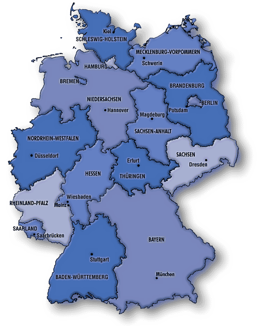

AUFGABE 1: Schreiben Sie ein Prolog-Programm (Fakten und Regeln), das mit einem Stammbaum (siehe unten) umgehen kann. Dabei bezeichnen Linien die Eltern-Kind-Relation. & bedeutet ist verheiratet mit. Definieren Sie diese beiden Relationen in Form von Fakten. Das Geschlecht der Person sollte auch festgehalten werden. Schreiben Sie nun Regeln für die Vater-, Geschwister-, Schwester-, Großmutter- und Tantenrelation.
AUFGABE 2: Schreiben Sie ein Prolog-Programm und zwei Anfragen, welche feststellen, ob (a) die alten Bundesländer (Baden-Württemberg, Bayern, Bremen, Hamburg, Hessen, Niedersachsen, Nordrhein-Westfalen, Rheinland-Pfalz, Saarland, Schleswig-Holstein) und (b) die neuen Bundesländer (Berlin, Brandenburg, Mecklenburg-Vorpommern, Sachsen, Sachsen-Anhalt, Thüringen) von Deutschland so mit den 3 Farben rot, gelb und blau eingefärbt werden können, dass keine benachbarten Bundesländer die gleiche Farbe haben. Welche Lösungen werden gefunden? (c) Lassen sich alle Bundesländer mit nur 3 Farben auf die o.g. Weise einfärben?
AUFGABE 3: Kryptoarithmetische Rätsel sind Darstellungen arithmetischer Berechnungen, bei denen die Ziffern durch Buchstaben verschlüsselt sind. Es gilt, diese Rechnungen zu rekonstruieren, wobei zu beachten ist, dass gleiche Buchstaben gleichen Ziffern und verschiedene Buchstaben verschiedenen Ziffern entsprechen. Außerdem darf für einen Buchstaben nicht 0 eingesetzt werden, wenn er an führender Stelle steht. Schreiben Sie ein Prolog-Programm, welches das folgende klassische Rätsel löst. Geben Sie auch die Lösung des Rätsels an! Wie lange braucht Ihr Programm, bis die Lösung gefunden wird?
S E N D + M O R E --------- M O N E YHinweise: Verwenden Sie die eingebauten Prädikate is/2, welches das Ergebnis einer Berechung einer Variablen zuweist, z.B. X is 2*Y+1, und =:=, welches die Werte zweier arithmetische Ausdrücke miteinander vergleicht. - In SWI-Prolog kann die Rechenzeit ermittelt werden, indem Sie die betreffende Anfrage als Argument von time aufrufen.